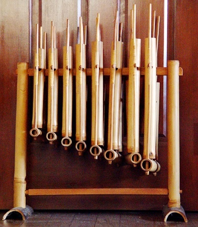
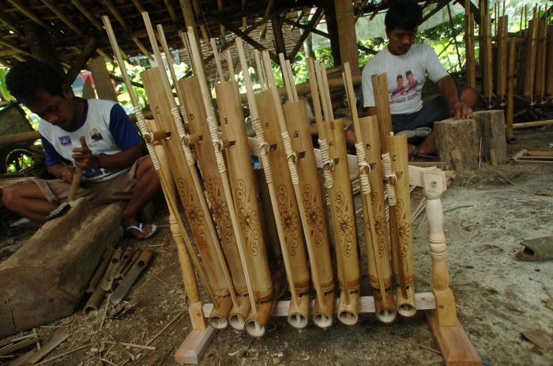
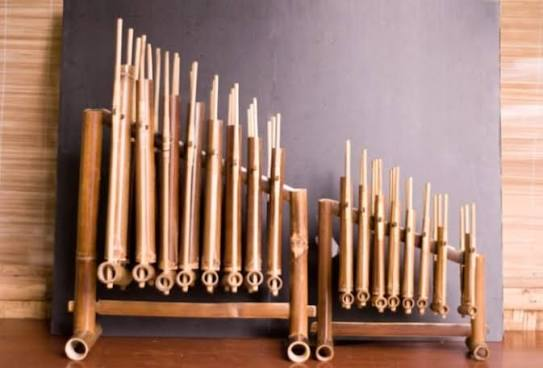

📜 Sejarah
Angklung Caruk merupakan salah satu kesenian tradisional khas Banyuwangi yang berasal dari masyarakat Osing (Using), yaitu masyarakat asli Banyuwangi. Kesenian ini bukan sekadar pertunjukan musik, melainkan juga menjadi wadah kreativitas, sportivitas, dan kebersamaan masyarakat.
Angklung Caruk diperkirakan mulai berkembang pada awal abad ke-20 di Banyuwangi. Kata "caruk" dalam bahasa Using berarti bertemu atau berhadapan. Dalam praktiknya, dua kelompok angklung dipertemukan dalam satu panggung untuk saling menunjukkan kemampuan bermain musik, kreativitas, serta kekompakan tim.
Awalnya, kesenian angklung di Banyuwangi digunakan sebagai hiburan masyarakat dalam berbagai acara desa. Seiring waktu, muncul inovasi berupa pertunjukan adu gending (lagu) antar kelompok yang kemudian dikenal sebagai Angklung Caruk.
Beberapa sumber menyebutkan bahwa sekitar tahun 1920-an, kesenian ini mulai mengalami perkembangan pesat dengan masuknya pengaruh alat musik Bali ke dalam ansambel angklung Banyuwangi. Inovasi tersebut memperkaya warna musik Angklung Caruk hingga menjadi bentuk pertunjukan seperti yang dikenal saat ini.
Pada masa sekarang, Angklung Caruk tidak hanya dimainkan oleh seniman dewasa. Pemerintah Banyuwangi juga rutin mengadakan Festival Angklung Caruk Pelajar sebagai upaya melestarikan budaya kepada generasi muda.
💭 Makna Filosofis
Di balik irama yang meriah, Angklung Caruk menyimpan berbagai nilai kehidupan yang penting:
🏆 Sportivitas
Meskipun disebut sebagai "adu" angklung, tujuan utamanya bukan untuk menjatuhkan lawan. Pertunjukan ini mengajarkan untuk bersaing secara sehat, menghargai kemampuan orang lain, dan menerima hasil dengan lapang dada.
🤝 Kerja Sama
Satu kelompok Angklung Caruk terdiri atas banyak pemain dengan tugas berbeda. Agar menghasilkan pertunjukan yang indah, semua anggota harus bekerja sama dengan baik.
🎨 Kreativitas
Setiap kelompok dituntut untuk menciptakan aransemen, tarian, bahkan lawakan yang menarik agar mampu memikat penonton.
🌟 Identitas Masyarakat Osing
Angklung Caruk menjadi simbol kebanggaan masyarakat Banyuwangi karena mencerminkan kekayaan budaya lokal yang diwariskan dari generasi ke generasi.
Penelitian menunjukkan bahwa Angklung Caruk mengandung nilai etika dan estetika, seperti gotong royong, sportivitas, dan penghargaan terhadap seni.
🎭 Prosesi Pertunjukan
Pertunjukan Angklung Caruk memiliki alur tersendiri yang membuatnya berbeda dari pertunjukan musik biasa:
1. Persiapan
Sebelum tampil, masing-masing kelompok melakukan latihan rutin, menyiapkan alat musik, menentukan lagu yang akan dibawakan, dan menyusun strategi penampilan agar lebih menarik dibanding lawan.
2. Pembukaan
Acara biasanya dibuka oleh pembawa acara atau tokoh masyarakat setempat. Setelah itu, kedua kelompok diperkenalkan kepada penonton.
3. Adu Pertunjukan (Caruk)
Inilah bagian paling ditunggu. Dua kelompok akan tampil secara bergantian, menampilkan lagu-lagu khas Banyuwangi, permainan angklung, atraksi tari, lawakan atau hiburan tambahan, serta improvisasi musik. Kelompok berikutnya akan berusaha menampilkan pertunjukan yang lebih menarik sebagai "jawaban" atas penampilan sebelumnya.
4. Penilaian
Dalam festival resmi, penilaian biasanya meliputi kekompakan pemain, teknik memainkan alat musik, kreativitas aransemen, penampilan keseluruhan, dan kemampuan menghibur penonton.
5. Penutup
Acara ditutup dengan pengumuman pemenang (jika berbentuk lomba) dan sesi kebersamaan antar kelompok. Hal ini menunjukkan bahwa persaingan dalam Angklung Caruk tetap dilandasi rasa persaudaraan.
🎼 Alat Musik yang Digunakan
Dalam satu pertunjukan Angklung Caruk biasanya terdapat beberapa instrumen:
- Angklung Banyuwangi
- Gong
- Kendang
- Saron
- Ketuk
- Kempul
Jumlah pemain umumnya berkisar 12–14 orang dalam satu kelompok.
✨ Fakta Menarik
"Caruk" Bukan Bertengkar
Dalam bahasa Using, caruk berarti bertemu atau berhadapan, bukan berkelahi. Ini adalah ajang adu kreativitas yang sehat.
Penonton Ikut Menentukan
Biasanya terdapat kelompok pendukung dari masing-masing tim yang membuat pertunjukan semakin meriah dan interaktif.
Festival Khusus Pelajar
Banyuwangi rutin menyelenggarakan Festival Angklung Caruk Pelajar agar generasi muda tetap mengenal budaya daerahnya.
Banyak Unsur Seni
Angklung Caruk bukan hanya musik. Di dalamnya terdapat tari, teater, lawakan, vokal, hingga atraksi panggung yang menghibur.
Berasal dari Bambu
Bahan utama alat musik angklung adalah bambu, sehingga mencerminkan kedekatan masyarakat Banyuwangi dengan alam.
Tetap Lestari
Di tengah perkembangan musik modern, Angklung Caruk tetap bertahan dan bahkan terus berkembang melalui berbagai festival budaya.
📸 Galeri



